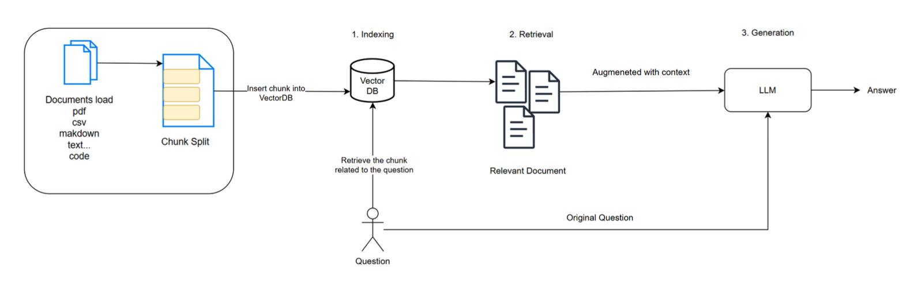

"카카오 자격요건 알려줘" 같은 질문을 하면
실제 채용공고를 찾아서 근거 있는 답변을 해줍니다.
취업 정보는 정확성이 중요하다. 잘못된 자격요건이나 연봉 정보를 알려주면 오히려 해롭기 때문에, 반드시 문서에 있는 내용만 답하도록 만들고 싶었다.
20개 회사 공고를 .md 파일로 저장 → 129개 청크로 분할 → ChromaDB에 벡터로 저장
질문과 비슷한 문단을 찾아서 GPT에게 전달. 키워드가 아닌 의미 기반 검색
GPT가 찾아온 문서만 참고해서 답변. 출처와 함께 반환.

문서 → 청크 → 임베딩 → ChromaDB 저장. 한 번만 수행.
질문을 벡터로 변환 후 가장 가까운 청크를 코사인 유사도로 검색.
찾은 청크를 GPT에게 전달. 문서 기반으로만 답변 생성.
20개 회사 채용공고를 .md 파일로 저장. 각 파일에 자격요건 · 우대사항 · 주요업무 섹션이 있음.
단락 기준으로 200자씩 분할. 처음엔 400이었는데 섹션이 합쳐져서 검색이 안 됨 → 200으로 변경 → 129개 청크.
청크 안에 회사 이름이 없으면 검색이 엉뚱한 회사를 반환. "카카오 - 자격 요건:\n..." 형식으로 앞에 붙여서 해결.
20개 파일 → 129개 청크 → 벡터 변환 → ChromaDB 저장
LLM에 넣을 수 있는 텍스트 길이(토큰)가 제한되어 있어서 문서 전체를 넣을 수 없다. 또한 문서 전체보다 관련 있는 부분만 잘라서 주는 게 더 정확한 답변을 유도한다.
키워드 검색은 단어가 일치할 때만 찾는다. Vector DB는 의미(semantic)가 비슷한 문서를 찾는다. "자격요건"을 검색했을 때 "필수 역량"도 함께 찾아주는 게 그 예시다.
Fine-tuning은 새 데이터마다 모델을 다시 학습해야 해서 비용·시간이 크다. RAG는 문서만 교체하면 되어서 빠르고 저렴하다. 채용공고처럼 자주 바뀌는 데이터에 특히 적합하다.
선배한테 "실제로 설치해서 파일로 저장되는 DB를 써보라"는 피드백을 받았다. 단순히 라이브러리로 불러오는 게 아니라, 실제 DB처럼 데이터가 남아 있는 게 더 현실적인 구현이라고 생각해서 ChromaDB를 선택했다.
paraphrase-multilingual-MiniLM-L12-v2
한국어 포함 50개 언어 지원. 텍스트를 384개 숫자(벡터)로 변환한다.
두 벡터가 가까울수록 = 의미가 비슷한 문장. 코사인 유사도로 측정.
질문 → 같은 모델로 벡터 변환 → ChromaDB에서 코사인 유사도 top-10 검색 → Re-ranker로 top-3 최종 선정
1단계만으로는 가끔 엉뚱한 회사 청크가 섞였다. Re-ranker를 추가하니 정확도가 눈에 띄게 향상됐다.
GPT에게 "취업 관련 질문인가?"를 먼저 물어봄. 관련 없으면 차단.
답변 마지막에 어디서 찾았는지 표시. 할루시네이션 억제에도 도움.
카카오는 Java/Kotlin 경험 3년 이상을 요구합니다.
[출처: 카카오 - 자격 요건]
답변이 너무 짧거나 "반드시 합격", "100% 취업" 같은 단정 표현이 있으면 경고 표시.
실시간 스트리밍 응답. 대화 히스토리 유지 (최대 10턴). 사이드바에 토큰 사용량 표시.
취업 정보는 신뢰가 중요하다. 잘못된 정보를 자신 있게 말하는 것보다 "이 내용은 이 공고에 있습니다"라고 출처와 함께 말하는 게 훨씬 낫다고 생각했다.
LLM이 만능이 아니라는 걸 알게 됐다. 문서를 검색해서 LLM에게 "힌트"를 주는 방식이 얼마나 강력한지 직접 구현하면서 체감했다.
RAG에서 가장 중요한 건 검색이었다. 청크 크기, 접두어 추가, Re-ranker까지 — 검색을 잘 해야 GPT가 좋은 답을 할 수 있다.
메모리에만 사는 FAISS가 아니라 파일로 저장되는 ChromaDB를 써봤다. 재시작해도 데이터가 남아 있는 게 실제 서비스와 같다는 걸 알았다.